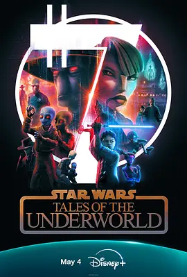

7.1
星球大战：黑市传说
Star Wars: Tales of the Underworld
2025
美国
评分 7.1
导演:
戴夫·菲洛尼
演员:
科里·伯顿 / 妮卡·福特曼 / AJ·罗卡西奥 / Lane Factor / 唐恩-林叶·加德纳
类型:
冒险,动作,科幻
剧情简介
在这部以银河边陲为舞台的故事集中，镜头随不同角色在黑市与阴影地带穿梭。地下世界的交易点终日灯火摇晃，空气里混着金属、尘土和旧引擎的焦味。赏金猎人们为了情报彼此试探，走私者在密谈间不断权衡利益与风险，而被卷入其中的普通人则努力寻找一线生路。每一集都围绕一个独立事件展开，有人追逐报酬，有人寻找赎罪机会，也有人只是尝试在混乱中保持清醒。角色之间的碰撞往往从一句低语开始，却在下一秒被紧张局势推向不可控的方向。剧情在快节奏的行动与充满悬念的对峙间切换，呈现出银河地下世界的复杂生态与隐秘秩序。作品通过细节展现角色的处境——摊主在昏暗灯光下快速藏起违禁品，飞船坞站里不断闪烁的警示灯提醒着危险随时降临，而雇佣者与受雇者的界限也在利益驱动下变得模糊。故事没有宏大的战争场面，却让观众感受到黑市中每一次选择的重量，以及藏在暗影里难以言说的牵引力。